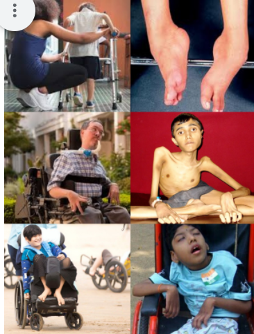

MD Ideathon
-
Event Description
What is Muscular Dystrophy?
- A group of genetic illnesses characterized by progressive muscular weakening and loss. Muscle degeneration is caused by improper genes (mutations) in muscular dystrophies. The most of forms start in childhood.
- Muscles that have been damaged get weaker with time. The majority of people with the illness will eventually require a wheelchair. Other signs and symptoms include difficulty breathing and swallowing. While medication, counselling, breathing assistance, and surgery may help maintain function, life expectancy is frequently reduced.
 -
Problem Statements
PS ID PROBLEM STATEMENTS MD01 The disease, Duchenne Muscular dystrophy (DMD) affected my brother and he is unable to move by himself. He always requires help from others, and being heavy, it’s somewhat difficult to carry and shift him. So, it would be better, if there is some kind of assistive device for attendees to shift him example: Bed to wheel chair or within house. Much obese people have to be handled properly and quite carefully, which is also a requirement in such problem. MD02 Leaving alone the Muscular Dystrophy patients at home make their life more complicated. They can’t access all areas and doors/windows of the house. If they want to close/open a door, they have to call someone which is not possible at that time, and if they wish to turn the fans or light on/off, they require additional help. Implementation of some IoT devices or automated appliances in houses can solve this problem. MD03 Attendees of Muscular Dystrophy patients’ require constant pampering of the patients, which results in skipping the daily workouts/exercises of the patients. If they practice proper and regular exercise, the posture of their body can be improved to a certain extent and it helps relaxing the patients to sit whole day straight. Thus, there is a certain need of an assistiv e tool or device for attendees, using which they can conduct exercises for the patients daily without much effort. The device should be cost efficient and compact in size so that it can be kept in small area. The exercises that are performed for Muscular Dystrophy are taken into considerations. For example, lifting the leg muscles up to some extent and bending exercises. MD04 The disease, Muscular Dystrophy affected my uncle, so he gets so much depressed to always dependent on others. To feel confident, he urges to eat his food and drink water on his own. Since, his muscles have become very weak, he is unable to balance his plates and bottle, but can perform movement of fingers and wrist alone. Provide us with some idea so that we can solve his problem by designing some mechanical or electro-mechanical products. MD05 The disease, Muscular Dystrophy affected my friend. She needs to go for a regular check-up every month. Her mom has to take the medical parameters required for the check-up, which is a very hard task as she is too old to do that. So, for her, the current need is an automatic patient monitoring system that can collect the needed parameters and can update the same to the assigned doctors or nurses, like checking the pulse rate, blood pressure, etc. MD06 There are some Muscular Dystrophy patients coming to our hospital in public vehicles and they are always requesting us for some help in technical sector, as they can ride cars on their own, as they are facing a huge problem in entering into the cars, which ultimately disappoint them. So, it would be very much helpful if there are some modifications in cars, or in their own chairs, so that they can easily travel in their own vehicles. MD07 In a family, only husband and wife are living, and both are affected by Muscular Dystrophy, Due to which they are having a lot of difficulties. There are some times, when they want to help each other by accessing each other’s wheelchair. Thus, there is a need of a multi connecting IoT system, through which they can have access to each other’s wheelchair so they can help themselves in harder times. MD08 The disease, Muscular Dystrophy affected patients need to spend most of their time in a well-structured wheelchair, which is not so comfortable and they complaint most of the time about their spinal cord pain. Also, they require a wheelchair that can be lifted upto some extent and can be rotated in the required directions so that they can easily perform operations like picking objects and placing objects at a particular place. MD09 Muscular Dystrophy patients need to take medicines at regular intervals of time. Some patients don’t have enough knowledge, to take their medicines correctly, which can lead to incorrect selection of medicines and can affect their health. We are in need of an automatic medicine dispenser that can be mounted on their own wheelchair for easy intake of medicines at the required time. MD10 There’s a Muscular Dystrophy patient in our neighborhood who can stand for a short period of time, without a support. It’s impossible to raise from the wheelchair. If we manage to design a mechanical support for him, he would be able to stand up on his feet for few couple of minutes which will boost his confidence level. MD11 The disease, Muscular Dystrophy affected my brother, due to which he always requires other’s attention. During the day time, he has to stay alone because of others in his family have to go to work and this made us to worry about him. He is educated and can operate electronic gadgets. If he has a device to communicate with his family members, it would be easier for him to easily intimate difficulties to them. Design an idea for such problem. MD12 Even though large hospitals are employing well manufactured medical equipment, a small defect or failure of minimal part, results in difficulties. Due to this, there is a delay in daily routine of checking the patients in hospital. Come up with an idea in designing a device or method to identify impairment in medical instruments or its parts. MD13 Amid covid situation, patients from different parts of the country are facing many problems due to insufficient number of ventilators in our country, which led to loss in life. So, it would be very useful for such patients across the nation, to provide certain number of ventilators which are cost-efficient. MD14 My friend is visually impaired. Once, he was standing at bus stand to board a bus to his hometown. He asked the nearby person for help, due to lack of consciousness. They boarded him in the wrong bus, due to which he reached the wrong place. It would be very much useful for such visually impaired persons to have some technical help or IoT based device for letting them know the right vehicle to board. MD15 Diabetic patients who used to take medicines regularly, are unable to take proper prescribed medicines and get confused which medicine to take at the required time. Come up with some technological idea to assist old age people in taking their medicines. MD16 Last month there was a fire accident in one of hospitals. The incubator had some technical issues, resulting in death of a three-month baby. Suggest an idea to redesign incubators to avoid such regular technical faults. -
Rules
- A team can consist minimum 3 and maximum of 6 members
- Registration Fee Rs. 50 /team
- The participants must present their ideas in ppt format only
- A team can select any number of problem statements
- The organizers reserve the right to change/update the rules of the contest at any point of time and will do their best to inform participants of the same through WhatsApp group
- LIMITED SEATS ONLY
- FIRST COME, FIRST SERVE BASIS
- YOUR REGISTRATION WILL BE CONFIRMED ONLY AFTER THE PAYMENT OF THE REGISTRATION FEES